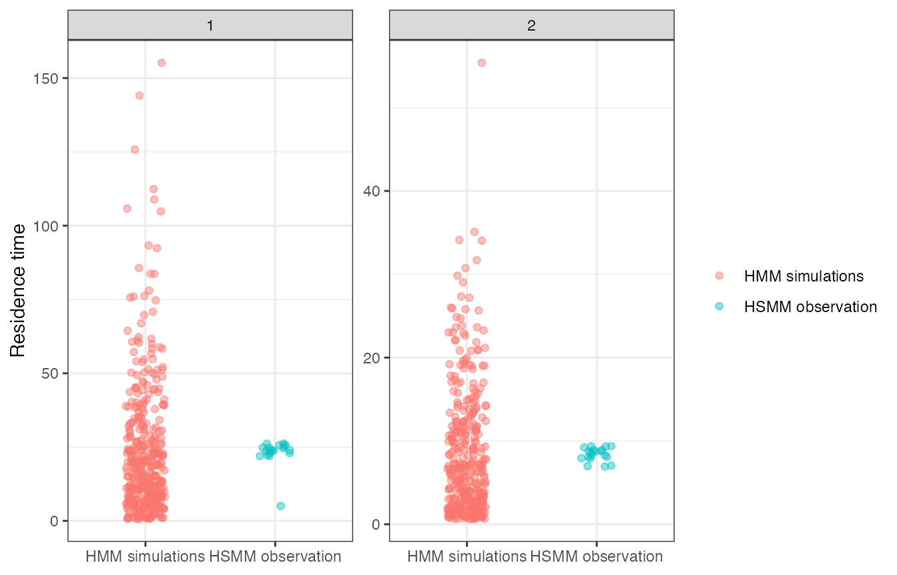

HSMM-SSF residence-time stress test
Source:vignettes/hsmm-ssf-memory-diagnostic.Rmd
hsmm-ssf-memory-diagnostic.RmdThis vignette studies a deliberately misspecified regime process. The observed trajectory is generated from an HSMM-like state process with non-geometric dwell times. The reference model is a best-case homogeneous HMM surrogate: it uses the same two state labels, the same movement kernels, and a transition matrix estimated from the generated state path.
This is not a full hidden-state refit. It is a stress test for the residence-time diagnostics. Because the HMM surrogate is given unusually favorable state information, a failure of the residence-time diagnostics points directly to the geometric dwell-time restriction rather than to poor state decoding.
Simulation design
The example has two states:
| State | Movement interpretation | Dwell-time design |
|---|---|---|
| 1 | Shorter and more tortuous movement | Nearly regular long bouts. |
| 2 | Longer and more directional movement | Nearly regular short bouts. |
There is no habitat-selection covariate in this minimal stress test. The movement component is a state-specific step-length and turning-angle kernel. In a fitted HMM-SSF application, this movement component would be replaced by the fitted SSF formula and covariates.
library(HMMSSFGenerativeRepair)
library(ggplot2)
#> Warning: package 'ggplot2' was built under R version 4.5.2
wrap_angle_local <- function(x) {
atan2(sin(x), cos(x))
}
simulate_hsmm_states <- function(n_steps, seed = NULL) {
if (!is.null(seed)) {
set.seed(seed)
}
states <- integer()
current <- sample(1:2, size = 1)
while (length(states) < n_steps) {
dwell <- if (current == 1L) {
sample(22:26, size = 1)
} else {
sample(7:9, size = 1)
}
states <- c(states, rep(current, dwell))
current <- 3L - current
}
states[seq_len(n_steps)]
}
estimate_transition_matrix <- function(states, n_states = 2L, pseudocount = 0.5) {
counts <- matrix(pseudocount, nrow = n_states, ncol = n_states)
for (i in seq_len(length(states) - 1L)) {
counts[states[i], states[i + 1L]] <- counts[states[i], states[i + 1L]] + 1
}
counts / rowSums(counts)
}
simulate_track_from_known_states <- function(states, seed = NULL) {
if (!is.null(seed)) {
set.seed(seed)
}
n_steps <- length(states)
x <- numeric(n_steps)
y <- numeric(n_steps)
bearing <- 0
for (t in 2:n_steps) {
state <- states[t]
step <- if (state == 1L) {
stats::rgamma(1, shape = 2.4, scale = 0.25)
} else {
stats::rgamma(1, shape = 3.0, scale = 0.9)
}
turn <- if (state == 1L) {
stats::rnorm(1, mean = 0, sd = 1.6)
} else {
stats::rnorm(1, mean = 0, sd = 0.25)
}
bearing <- wrap_angle_local(bearing + turn)
x[t] <- x[t - 1L] + step * cos(bearing)
y[t] <- y[t - 1L] + step * sin(bearing)
}
data.frame(x = x, y = y)
}Build the HSMM observation and HMM surrogate
The HMM surrogate is calibrated from the HSMM state path by empirical transition counts. This gives the HMM the right average switching frequency, but it cannot reproduce the non-geometric shape of the dwell-time distributions.
n_steps <- 600
n_sims <- 99
observed_states <- simulate_hsmm_states(n_steps, seed = 100)
observed_track <- simulate_track_from_known_states(observed_states, seed = 101)
hmm_transition <- estimate_transition_matrix(observed_states)
initial <- tabulate(observed_states, nbins = 2)
initial <- initial / sum(initial)
hmm_states <- simulate_markov_states(
initial = initial,
transition = hmm_transition,
n_steps = n_steps,
n_sims = n_sims,
seed = 102
)
simulated_tracks <- lapply(seq_len(nrow(hmm_states)), function(i) {
simulate_track_from_known_states(hmm_states[i, ], seed = 200 + i)
})
names(simulated_tracks) <- paste0("sim_", seq_along(simulated_tracks))
hmm_transition
#> [,1] [,2]
#> [1,] 0.9580499 0.04195011
#> [2,] 0.1218750 0.87812500Diagnose the surrogate HMM
The diagnostic call uses precomputed trajectories and state paths.
The reference_transition argument is used only by
state_residence_geometric.
memory_diagnosis <- diagnose_hmmssf_simulations(
observed_track = observed_track,
simulated_tracks = simulated_tracks,
observed_states = observed_states,
simulated_states = hmm_states,
reference_transition = hmm_transition,
label = "best_case_hmm",
diagnostics = c(
"msd",
"sinuosity",
"state_occupancy",
"state_residence_time",
"state_residence_geometric",
"switching_rate",
"transition_counts"
)
)
selected <- memory_diagnosis$diagnostics[
memory_diagnosis$diagnostics$diagnostic %in% c(
"msd",
"sinuosity",
"state_occupancy_total_variation",
"state_residence_time",
"state_residence_geometric",
"switching_rate",
"transition_counts"
),
c(
"diagnostic",
"state",
"observed_discrepancy",
"simulated_discrepancy_median",
"mc_p_value",
"mc_p_value_resolution",
"interpretation_label"
)
]
knitr::kable(selected, digits = 3)| diagnostic | state | observed_discrepancy | simulated_discrepancy_median | mc_p_value | mc_p_value_resolution | interpretation_label | |
|---|---|---|---|---|---|---|---|
| 1 | msd | NA | 1264111.314 | 1193670.103 | 0.49 | 0.01 | pass_diffuse |
| 2 | sinuosity | NA | 0.111 | 0.058 | 0.13 | 0.01 | pass_diffuse |
| 5 | state_occupancy_total_variation | NA | 0.004 | 0.041 | 0.99 | 0.01 | pass_diffuse |
| 6 | state_residence_time | 1 | 14.648 | 7.513 | 0.03 | 0.01 | fail |
| 7 | state_residence_time | 2 | 4.915 | 2.316 | 0.03 | 0.01 | fail |
| 8 | state_residence_geometric | 1 | 15.050 | 7.410 | 0.01 | 0.01 | fail |
| 9 | state_residence_geometric | 2 | 4.988 | 2.252 | 0.03 | 0.01 | fail |
| 10 | switching_rate | NA | 0.002 | 0.008 | 0.94 | 0.01 | pass_moderate |
| 11 | transition_counts | NA | 0.006 | 0.060 | 0.99 | 0.01 | pass_diffuse |
In this seeded example, occupancy, switching rate, and transition counts are not extreme because the HMM transition matrix was calibrated from the HSMM state path. The residence-time diagnostics are extreme because the observed dwell times are much more regular than the geometric dwell times generated by the HMM.
Residence-time distributions
run_lengths_df <- function(states, source, sim_id = NA_integer_) {
runs <- rle(states)
data.frame(
source = source,
sim_id = sim_id,
state = as.integer(runs$values),
run_length = as.integer(runs$lengths)
)
}
residence_df <- rbind(
run_lengths_df(observed_states, "HSMM observation"),
do.call(
rbind,
lapply(seq_len(20), function(i) {
run_lengths_df(hmm_states[i, ], "HMM simulations", sim_id = i)
})
)
)
ggplot(residence_df, aes(x = source, y = run_length, color = source)) +
geom_jitter(width = 0.15, alpha = 0.45, size = 1.6) +
facet_wrap(~ state, scales = "free_y") +
theme_bw() +
labs(
x = NULL,
y = "Residence time",
color = NULL
)
The plot shows the intended stress-test structure. The HMM can reproduce the average transition rate, but its residence-time distribution has the geometric shape implied by the Markov assumption. The HSMM observation has non-geometric dwell times by construction.
Interpretation
This vignette supports the following use of the diagnostics:
-
state_residence_timeis the simulation-based check. It asks whether residence times in the decoded or supplied observed state path are unusual relative to residence times in trajectories generated by the fitted model. -
state_residence_geometricis the direct homogeneous-HMM check. It asks whether decoded residence times are unusual under the geometric dwell-time distribution implied by the fitted transition matrix. - A small residence-time p-value should be interpreted as evidence of residence-time mismatch. It does not by itself identify the correct alternative model.
The natural follow-up is to compare the standard HMM-SSF with an HSMM-SSF or another duration-explicit regime model when residence-time diagnostics fail while occupancy and transition-count diagnostics remain compatible.